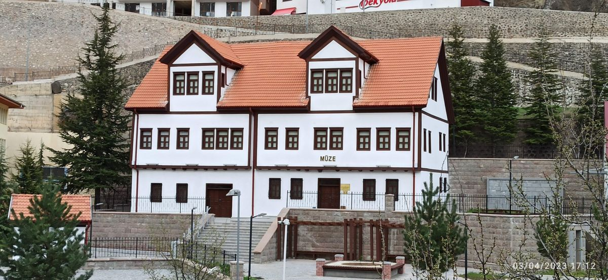
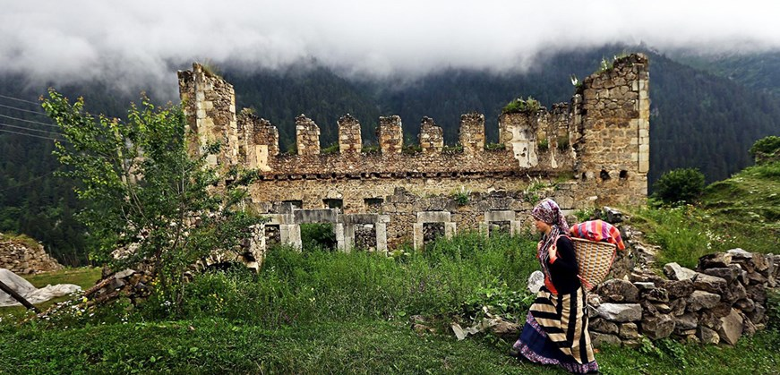
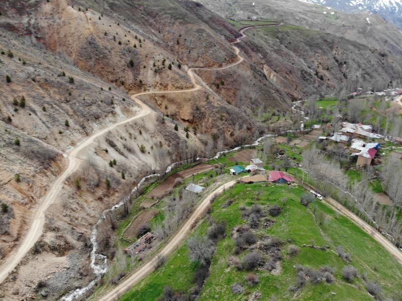
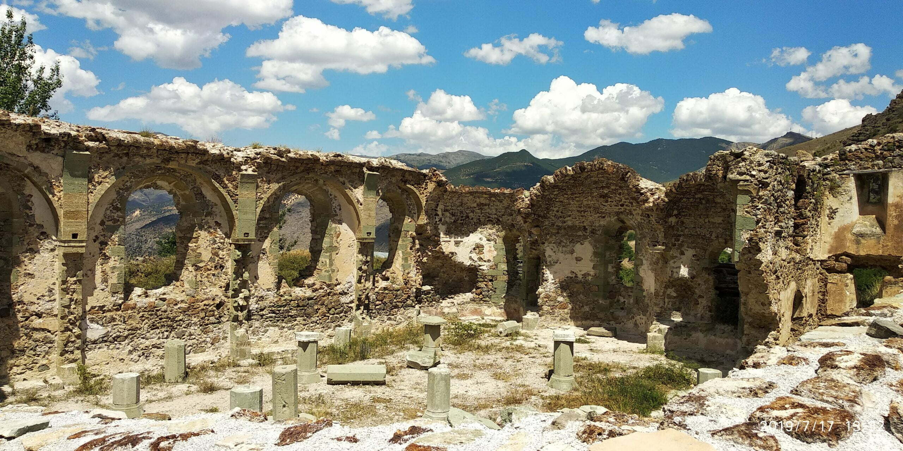

Gümüşhane Kültürel Yerler
Gümüş Şehir
Müzeler

Gümüşhane Müzesi
Gümüşhane'nin tarihi ve kültürel mirasını yansıtan müze.

Etnografya Müzesi
Gümüşhane'nin geleneksel kültürünü yansıtan etnografik eserler.

Maden Müzesi
Gümüşhane'nin maden tarihini yansıtan müze.
Tarihi Yapılar

Santa Harabeleri
Antik dönemden kalma tarihi yerleşim yeri.

Krom Madeni
Tarihi maden işletmesi ve tesisleri.

Kilise
19. yüzyıldan kalma tarihi kilise.